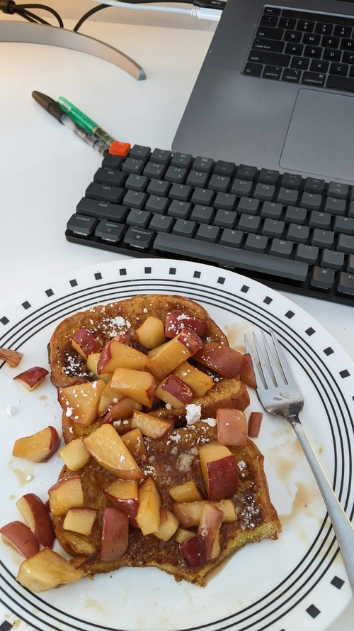

French Toast

Serves: 3ish
Prep time: 30mins
Author: Matthieu Court
Ingredients
4 thick slices of Brioche
1/2 - Apples with skin on (diced)
4ish Tbsp - Sugar
1 Dash - Powdered Sugar
3/4 - eggs
Nice string - Milk
Cinnamon (to taste)
Steps
Toast your brioche first. This combats the central problem of soggry French toast.
Sugar into a hot pan, and start your light caramel.
Apples into the sugar.
Whisk eggs, and combine with milk, cinnamon and some sugar.
Dip already toasted brioche, then blast it on a clean pan.
Serve caramel apples on toast, dust with powdered sugar.
Back to Home